AGENTES E SUAS HABILIDADES
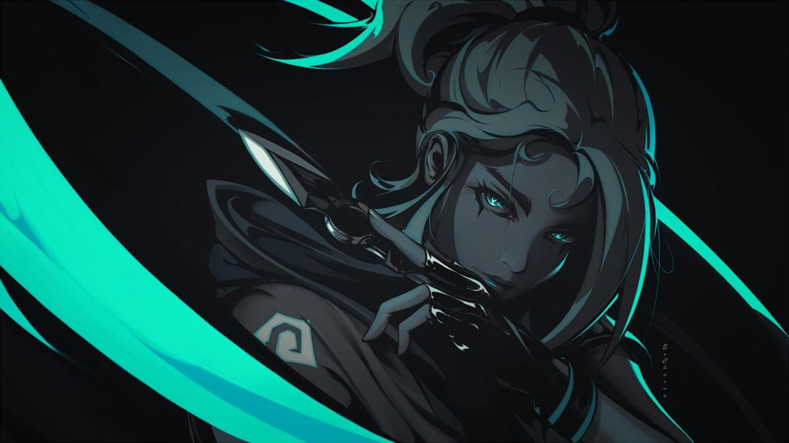
JETT
- Função: Duelista
- Biografia: Representando a Coreia do Sul, sua terra natal, Jett tem um estilo de luta ágil e evasivo que permite que ela assuma riscos como ninguém. Ela corre em meio a qualquer confronto, cortando os inimigos antes mesmo que eles percebam quem ou o que os atingiu.
HABILIDADES
- Q – Corrente Ascendente: Impele Jett bem alto no ar
- E – Brisa de Impulso: Impele Jett na direção atual de movimento dela. Se estiver parada, Jett será impelida para a frente.
- C – Erupção das Brumas: Lança um projétil que se expande numa breve nuvem que obscurece a visão ao bater numa superfície. É possível curvar a fumaça na direção da sua mira.
- X – Tormenta de Aço: Equipa um conjunto de facas altamente precisas que são recarregadas ao matar um oponente. É possível lançar uma faca ou todas de uma vez.
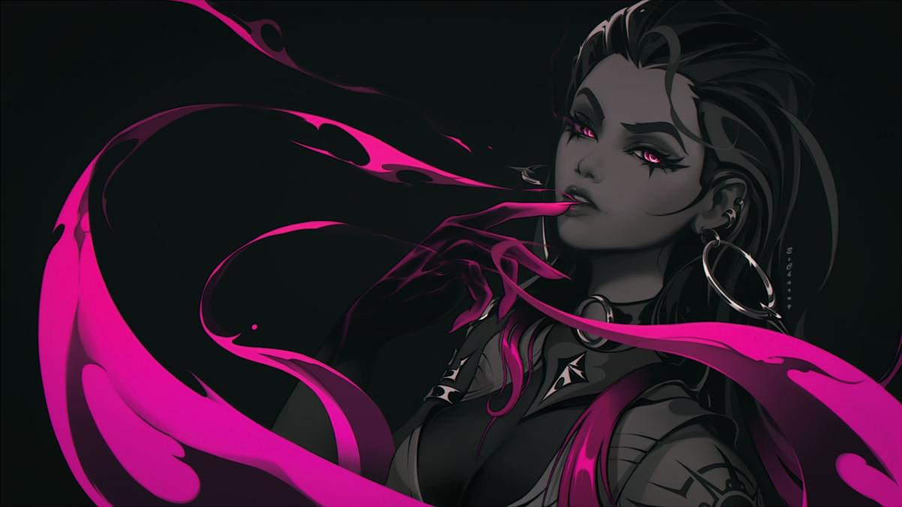
REYNA
- Função: Duelista
- Biografia: Criada no coração do México, Reyna domina o combate individual, destacando-se a cada abate efetuado. Sua capacidade só é limitada por sua própria perícia, tornando-a bastante dependente de desempenho.
HABILIDADES
Inimigos abatidos por Reyna deixam Orbes de Alma que duram três segundos.
- Q – Devorar: Consome um Orbe de Alma próximo, curando-se de forma rápida por um curto período. A quantidade de Vida concedida por esta habilidade que ultrapassar 100 decairá ao longo do tempo. Se a habilidade Imperatriz estiver ativa, esta habilidade será conjurada automaticamente e não consumirá o orbe.
- W - Dispensar: Consome um Orbe de Alma próximo, ficando inatingível por um curto período. Também se torna invisível se a habilidade Imperatriz estiver ativa.
- E - Olhar Vozar: Um olho etéreo e destrutível que deixa com inimigos com a visão turva se olharem para ele.
- X – Imperatriz: Reyna entra em estado de frenesi, aumentando de forma drástica as velocidades de disparo, equipamento e recarga de munição. Renova a duração ao fazer um abate.
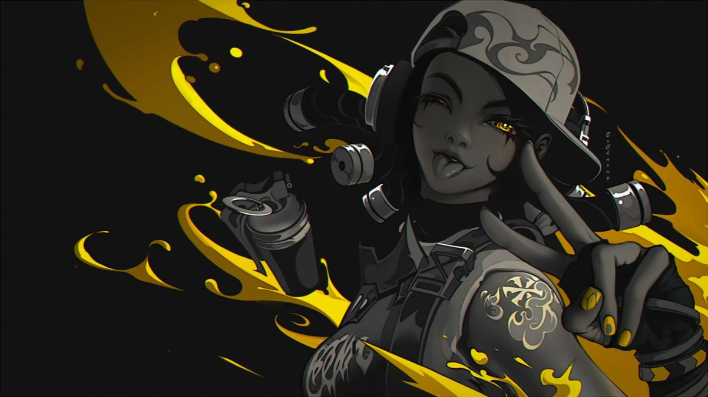
RAZE
- Função: Duelista
- Biografia: Raze chega do Brasil em uma explosão de carisma e armas letais. Com seu estilo de jogo "porradeiro", ela é craque em desentocar inimigos entrincheirados e limpar espaços apertados com uma bela dose de BUUUM!
HABILIDADES
- Q – Carga de Explosivos: Joga uma Carga de Explosivos que gruda em superfícies. A habilidade depois de instalada pode ser detonada, causando dano e movendo tudo que for atingido. Raze não sofre dano ao ser atingida pelo efeito desta habilidade, mas ainda pode sofrer dano de queda se for arremessada para longe.
- E – Cartucho de Tinta: Uma granada múltipla que causa dano e cria submunições, cada uma causando dano a qualquer um que estiver no alcance.
- C – Bumba: Um robô, que avança em linha reta no chão, ricocheteando nas paredes. O Bumba trava ao detectar inimigos no cone frontal e os persegue, explodindo e causando muito dano se alcançá-los.
- X – Estraga-Prazeres: Equipa um lança-mísseis com um foguete que causa dano devastador em área ao fazer contato com qualquer coisa.
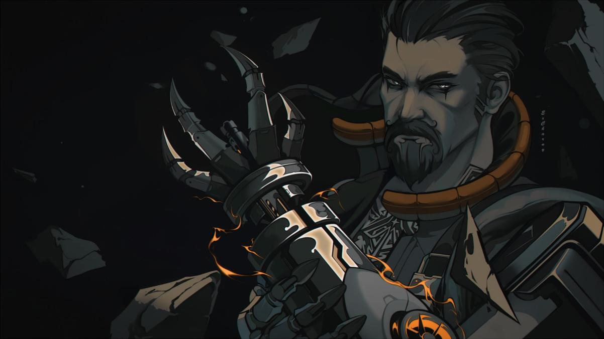
BREACH
- Função: Iniciador
- Biografia: Breach, o homem-biônico sueco, dispara poderosos jatos cinéticos para forçar a abertura de um caminho pelo território inimigo. O dano e a interrupção que ele causa garantem que nenhuma luta seja justa.
HABILIDADES
- Q – Estopim: Uma carga cegante que é utilizada pela parede. A carga é detonada, cegando todos os jogadores que estiverem olhando para ela.
- E – Falha Tectônica: Um impacto sísmico que pode iniciar um terremoto, estonteando todos os jogadores na zona e numa linha reta até a zona.
- C – Pós-Choque: Arma um jato de ação lenta pela parede. O jato causa muito dano a todos que estiverem na área de efeito.
- X – Onda Trovejante: Terremoto em cascata por todo o terreno num grande cone. O terremoto estonteia e derruba todos que estiverem na área de efeito.
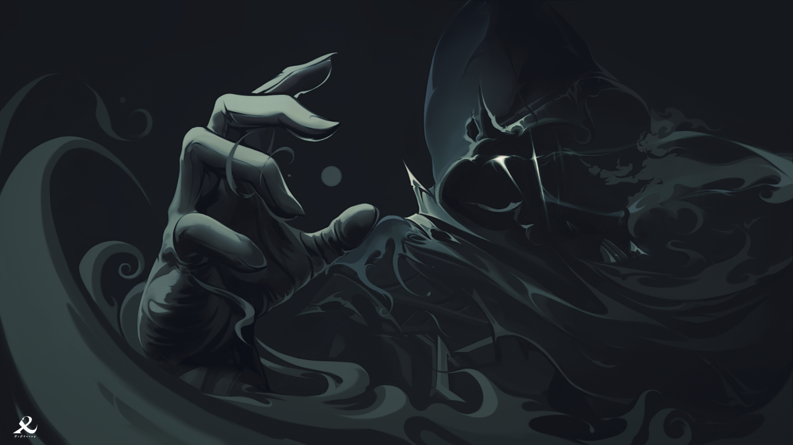
OMEN
- Função: Controlador
- Biografia: Omen, uma lembrança fantasmagórica, caça nas sombras. Ele cega os inimigos, teleporta-se pelo campo e deixa a paranoia assumir o controle enquanto o adversário tenta descobrir de onde virá seu próximo ataque.
HABILIDADES
- Q – Paranoia: Emite um projétil sombrio adiante, reduzindo brevemente o alcance de visão dos jogadores tocados. O projétil atravessa paredes.
- E – Manto Sombrio: Lança um orbe em local marcado, criando uma esfera de sombra duradoura que bloqueia a visão.
- C – Passos Tenebrosos: Começa uma breve canalização e, então, teleporte-se para o local indicado.
- X – Salto das Sombas: Se teleporta para qualquer local selecionado do mapa. Enquanto se teleporta, Omen aparecerá como um Vulto que pode ser destruído por qualquer inimigo para cancelar o teleporte.
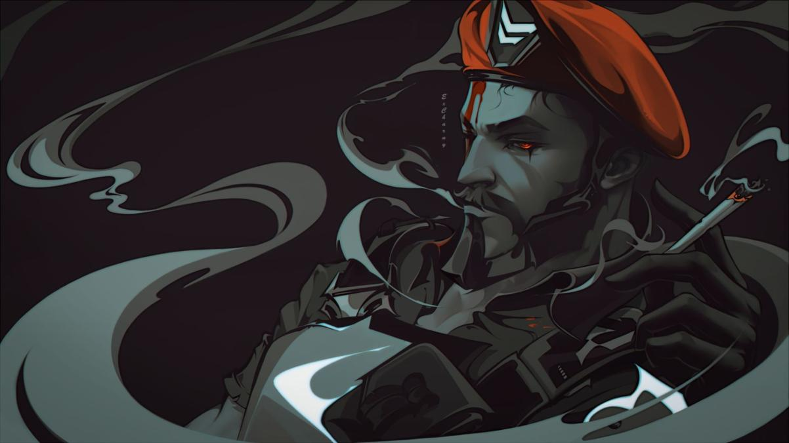
BRIMSTONE
- Função: Controlador
- Biografia: Vindo diretamente dos EUA, o arsenal orbital de Brimstone garante que o esquadrão dele esteja sempre em vantagem. Sua capacidade de oferecer utilidade com precisão a distância faz dele um comandante inigualável na linha de frente.
HABILIDADES
- Q - Incendiário: Uma granada que detona no chão, gerando uma zona de fogo que causa dano aos jogadores dentro dela.
- E - Fumaça Celeste: Nuvens de fumaça vindas do céu, de longa duração que bloqueiam a visão na área selecionada.
- C - Sinalizador Estimulante: Coloca um sinalizador estimulante no chão, que cria um campo que concede Tiro Rápido aos jogadores.
- X - Ataque Orbital: Lança um ataque prolongado de laser orbital em algum local selecionado, causando muito dano ao longo do tempo aos jogadores na área selecionada.
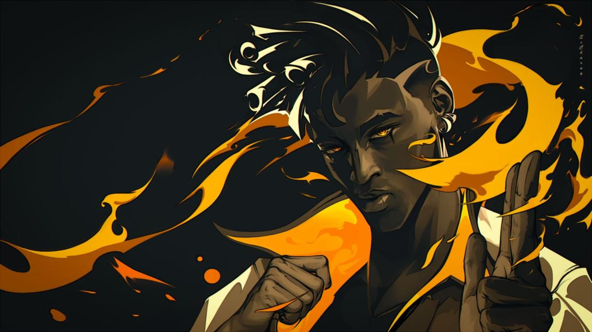
PHOENIX
- Função: Duelista
- Biografia: Chegando com tudo diretamente do Reino Unido, o poder estelar de Phoenix reluz em seu estilo de luta, incendiando o campo de batalha com luz e estilo. Tendo ajuda ou não, ele entra na luta como e quando achar que deve.
HABILIDADES
- Q - Bola Curva: Um orbe de chamas que avança em curva e detona pouco após o lançamento e cega qualquer jogador que vir o orbe.
- E - Mãos Quentes: Uma bola de fogo que explode após um intervalo ou ao atingir o chão, criando uma zona duradoura de fogo que causa dano aos inimigos e cura Phoenix.
- C - Labaredas: Uma linha de chamas que avança, gerando uma parede de fogo que bloqueia a visão e causa dano a jogadores que passarem por ela. Phoenix é curado na parede.
- X - Renascimento: Coloca um marcador na localização de Phoenix. Com a habilidade ativa, morrer ou deixar o tempo acabar encerrarão a habilidade e trarão Phoenix de volta ao local marcado com Vida completa.
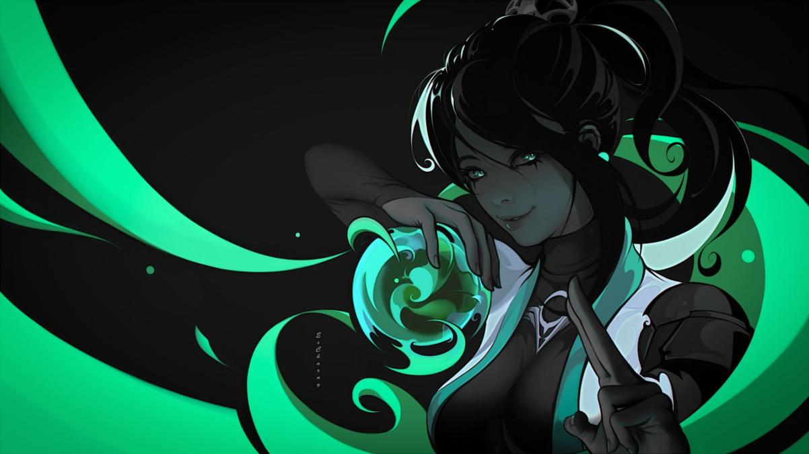
SAGE
- Função: Sentinela
- Biografia: Como uma verdadeira fortaleza chinesa, Sage traz segurança para si mesma e para a equipe aonde quer que vá. Capaz de reviver aliados e rechaçar investidas agressivas, ela oferece um centro de calmaria em meio ao caos da batalha.
HABILIDADES
- Q - Orbe de Lentidão: Orbe que detona ao pousar, criando um campo duradouro que desacelera os jogadores dentro dele.
- E - Orbe Curativo: Orbe que cura a si mesma ou a um aliado ao longo do tempo.
- C - Orbe de Barreira: Posiciona uma parede de gelo sólida.
- X - Renascimento: Revive um aliado morto. Depois de uma breve canalização, o aliado voltará com a Vida completa.
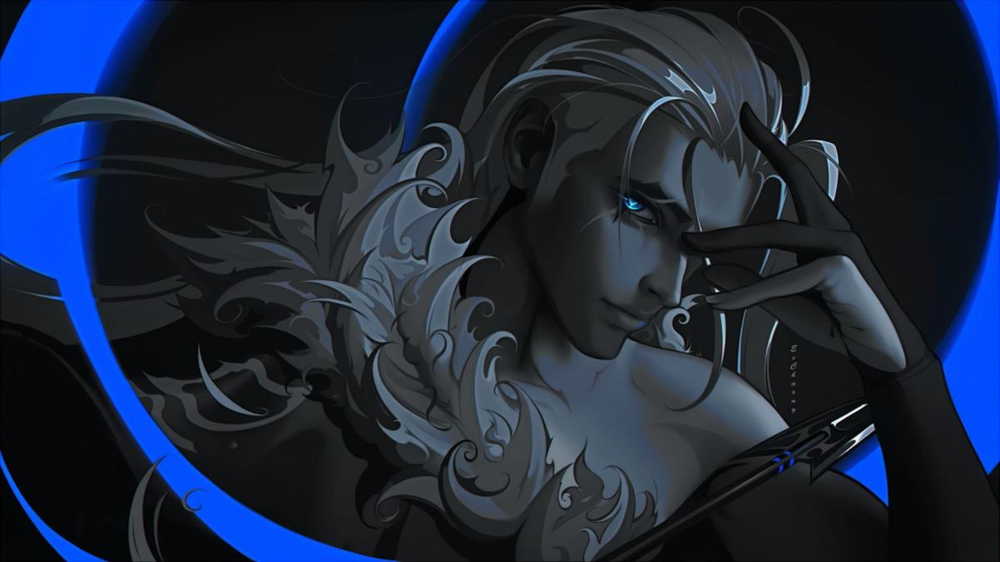
SOVA
- Função: Iniciador
- Biografia: Nascido sob o eterno inverno das tundras russas, Sova rastreia, encontra e elimina inimigos com eficiência e precisão implacáveis. Seu arco personalizado e suas habilidades inigualáveis de reconhecimento garantem que nenhuma presa escape.
HABILIDADES
- Q - Flecha de Choque: Flecha que explode ao impacto, causando dano aos jogadores próximos.
- E - Flecha Rastreadora: Flecha, que é ativada mediante impacto e revela a localização de quaisquer inimigos próximos da sua linha de visão.
- C - Drone Coruja: Um drone é lançado. Enquanto pilota o drone, é possível atirar um dardo marcador. Dardos revelam a localização de quaisquer jogadores atingidos.
- X - Fúria do Caçador: Um arco com três disparos de longo alcance que perfuram paredes.
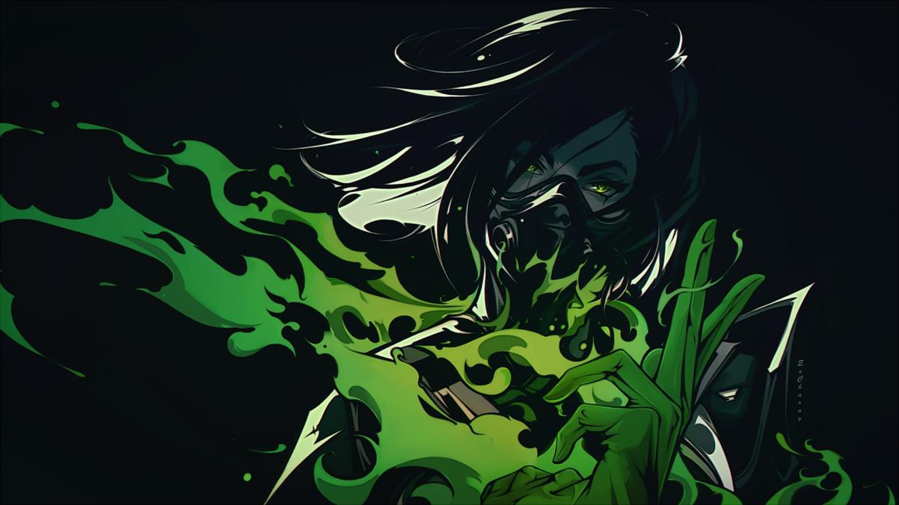
VIPER
- Função: Controladora
- Biografia: Viper, a química dos Estados Unidos, emprega uma variedade de dispositivos químicos venenosos para controlar o campo de batalha e prejudicar a visão do inimigo. Se as toxinas não matarem a presa, seus jogos mentais certamente o farão.
HABILIDADES
- Q - Nuvem Venenosa: Um emissor de gás, que persiste até o fim da rodada e cria uma nuvem de gás tóxico.
- E - Cortina Tóxica: Lança uma longa linha de emissores de gás e cria uma parede alta de gás tóxico.
- C - Veneno de Cobra: Lança um cilindro que se rompe ao atingir o chão, gerando uma zona química duradoura que causa dano e reduz a velocidade dos inimigos.
- X - Poço Peçonhento: Borrifador químico que cria uma grande nuvem que reduz o alcance de visão e a Vida máxima dos jogadores dentro dela.
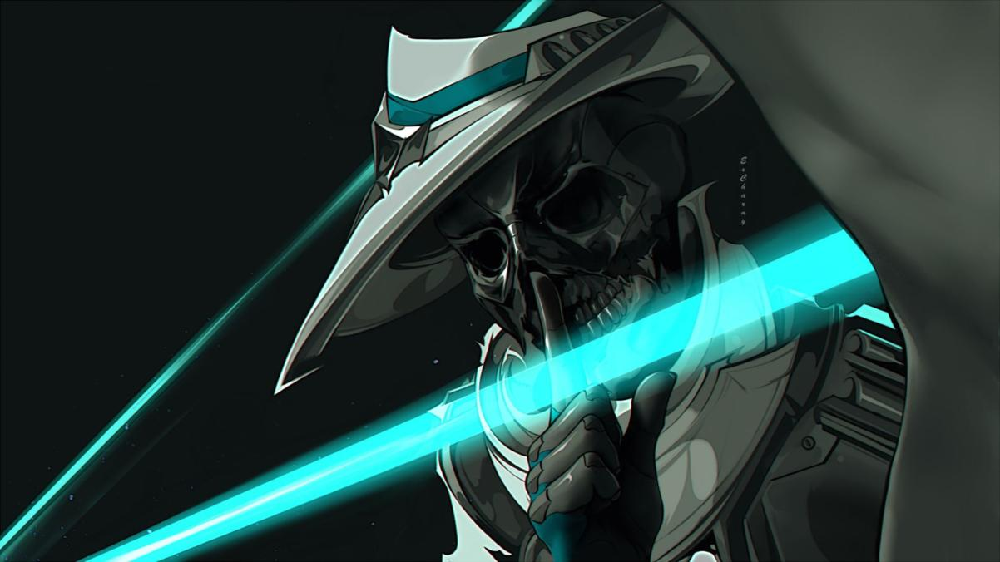
CYPHER
- Função: Sentinela
- Biografia: Cypher, um vendedor de informações do Marrocos, é uma verdadeira rede de vigilância de um homem só que fica de olho em cada movimento dos inimigos. Nenhum segredo está a salvo. Nenhuma manobra passa despercebida. Cypher está sempre vigiando.
HABILIDADES
- Q - Jaula Cibernética: Cria uma zona que bloqueia a visão e reduz a velocidade de inimigos que passarem por ela.
- W - Câmera de Vigilância: Coloca uma câmera em um local-alvo. Enquanto controla a câmera, é possível lançar um dardo marcador. O dardo revelará a localização de qualquer jogador atingido.
- E - Fio-Armadilha: Fio acionador oculto que uma linha entre o local e a parede oposta. Jogadores inimigos que passarem por um fio e não destruírem o dispositivo a tempo ficarão imobilizados, revelados e estonteados depois de um breve intervalo.
- X - Assalto Neural: Revela a localização de todos os jogadores inimigos ainda vivos.
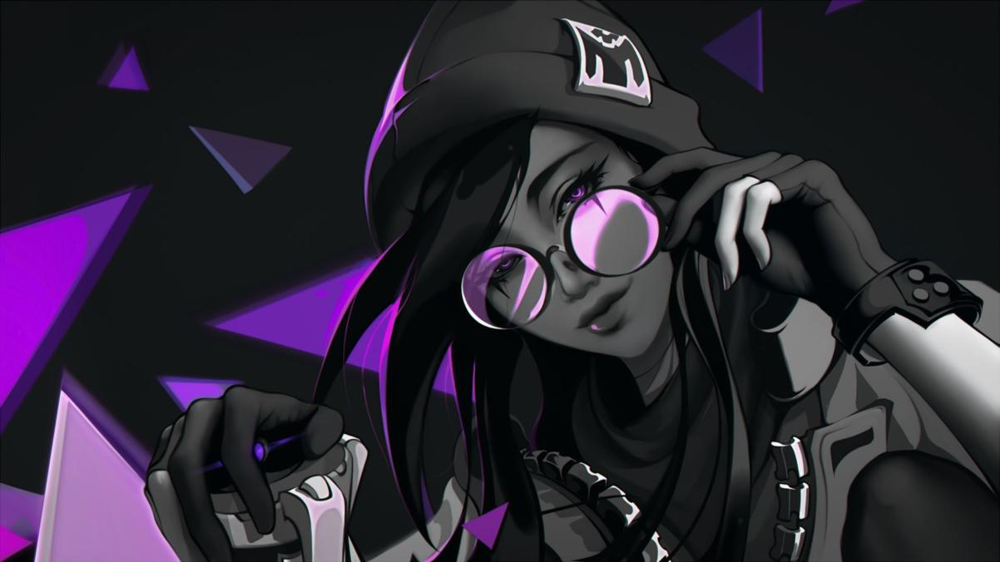
KILLJOY
- Função: Sentinela
- Biografia: Killjoy, uma alemã genial, defende o campo de batalha facilmente usando seu arsenal de invenções. Se o dano causado por seu equipamento não der cabo dos inimigos, os efeitos negativos de seus queridos robôs dão conta do recado.
HABILIDADES
- Q - Robô de Alarme: Robô que persegue os inimigos que entram no alcance. Ao se aproximar do alvo, o robô explode, causando dano e aplicando Vulnerável.
- W - Torreta: Uma torreta que atira em inimigos em um cone de 180°.
- E - Nanoenxame: Uma granada Nanoenxame, que aciona um enxame de nanorrobôs que causam dano.
- X – Confinamento: Dispositivo que detém todos os inimigos no raio de alcance, reduzindo drasticamente sua velocidade e os deixando desarmados.
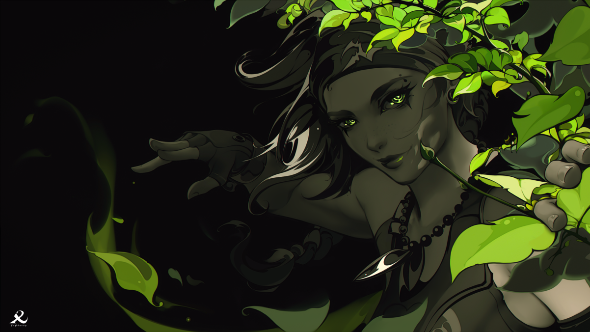
SKYE
- Função: Iniciadora
- Biografia: Mandando um salve direto da Austrália, Skye e sua equipe de feras desbravam territórios hostis. Com seus poderes de cura e suas criações que partem pra cima dos inimigos, qualquer equipe ficará mais forte e mais segura tendo Skye como aliada.
HABILIDADES
- Q - Predador Explosivo: Controla um predador que pode saltar para a frente. O lobo gera uma explosão e causa dano aos inimigos diretamente atingidos.
- W - Luz Desbravadora: Guia um falcão na direção da sua mira. Enquanto estiver voando, o falcão pode ser transformado em um feixe de luz que cega inimigos que estejam dentro do alcance ou na linha de visão.
- E - Reflorescer: Cura aliados dentro do alcance e na sua linha de visão.
- X – Rastreadores: Envia três rastreadores que localizarão os três inimigos mais próximos. Se um rastreador alcançar um alvo, ele causará visão turva a esse inimigo.
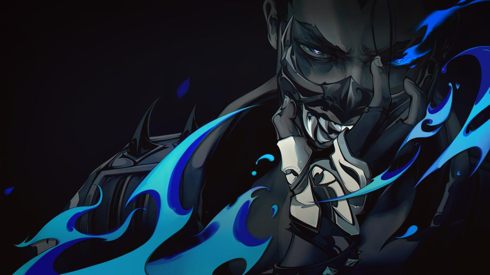
YORU
- Função: Duelista
- Biografia: Yoru, nativo do Japão, abre fendas na realidade para infiltrar as linhas inimigas sem ser visto. Ele usa tanto artimanhas quanto táticas agressivas, e os alvos são abatidos sem saber de onde o ataque veio.
HABILIDADES
- Q - Ponto Cego: Lança um fragmento, ativando um clarão que se dissipa ao atingir uma superfície sólida e cega inimigos.
- W - Passagem Dimensional: Prepara um fluxo dimensional que pode ser lançado até uma extremidade. Ao ativar a habilidade, se teleporta até a extremidade lançada.
- E - Falcatrua: Uma granada de eco que imita passos quando ativada.
- X - Espionagem Dimensional: Yoru se locomove sem poder ser afetado e nem visto pelos inimigos.
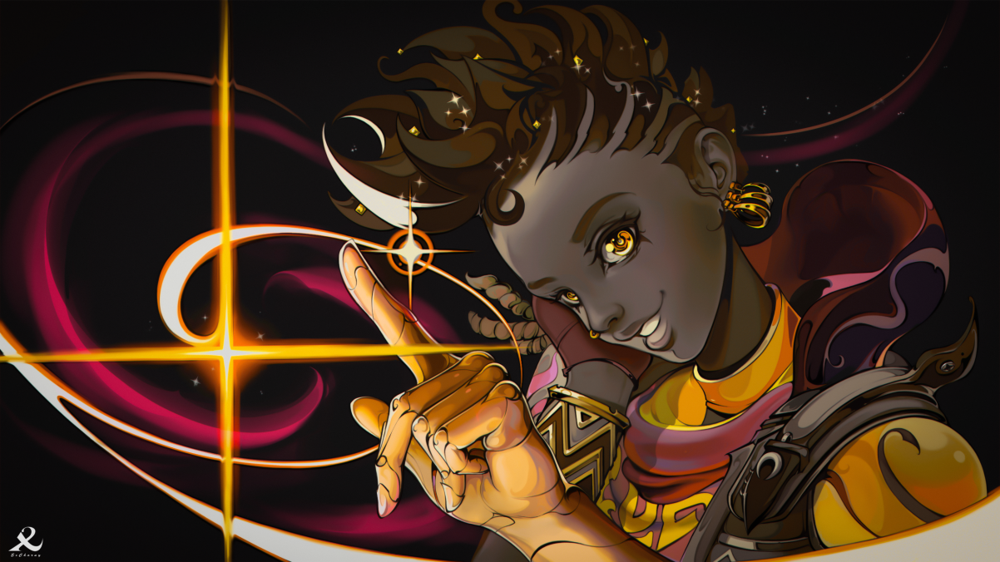
ASTRA
- Função: Controladora
- Biografia: Astra, a Agente ganense, utiliza energias cósmicas para moldar o campo de batalha a seu bel-prazer. Com total domínio da sua forma astral e um talento estratégico nato, ela está sempre anos-luz à frente dos inimigos.
HABILIDADES
- Q - Pulso Nova: Carrega brevemente e depois estoura, causando concussão a todos os jogadores na área.
- E - Nebulosa: Forma brevemente uma nuvem Nebulosa em um local pré-determinado.
- C - Poço Gravitacional: Jogadores na área são puxados em direção ao centro antes de ele explodir, deixando frágeis todos que ainda estão presos no centro.
- X - Forma Astral/Divisa Cósmica: Uma Divisa Cósmica infinita, que surge e conecta pontos selecionados, bloqueando disparos e abafando o som.